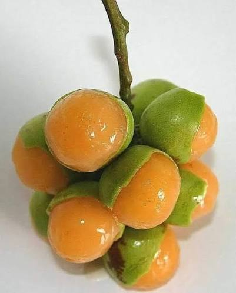

Sabores - Gastronomia y Tradicion
Saberes - Conocimiento Cientifico y Ancestral
Salud - Alimentacion y Bienestar
El mamón es una fruta muy apreciada en las épocas de cosecha en Córdoba, presente en patios y fincas familiares, donde su recolección suele convertirse en una actividad compartida entre niños y adultos de la comunidad.
Proviene de un árbol de tamaño mediano a grande, con copa densa y hojas compuestas. Sus frutos crecen agrupados en racimos, son pequeños, de cáscara delgada color verde, y contienen una pulpa jugosa, dulce y ligeramente ácida que rodea una semilla grande.
Se desarrolla bien en climas cálidos y húmedos, con suelos fértiles y buen drenaje. Es un árbol de crecimiento relativamente lento que, una vez establecido, puede producir durante muchos años en condiciones adecuadas.
El mamón se consume principalmente fresco, chupando su pulpa directamente de la fruta. En algunas comunidades también se aprovecha para preparar jugos y dulces artesanales durante su temporada de mayor producción.
Se encuentra en patios, fincas y huertos familiares de distintos municipios de Córdoba, siendo un árbol frutal muy común en las zonas rurales de la región del Sinú.
El mamón aporta vitamina C, fibra y antioxidantes naturales, además de ser una fruta refrescante con un buen contenido de agua, ideal para el clima cálido de la región.
La producción de mamón suele concentrarse hacia la mitad del año, siendo una fruta muy esperada por las comunidades rurales durante esa temporada específica.
La venta de mamón durante su temporada de cosecha representa una fuente adicional de ingresos para familias campesinas, especialmente en zonas donde el árbol crece de forma abundante.
Su contenido de vitamina C contribuye al fortalecimiento del sistema inmunológico, mientras que su aporte de fibra favorece una buena digestión cuando se consume de forma moderada.
El mamón está asociado a recuerdos de infancia y a momentos de encuentro comunitario durante su temporada de cosecha, siendo una fruta que evoca la vida cotidiana en los pueblos y veredas del Sinú.